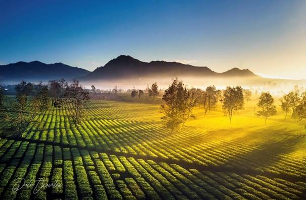
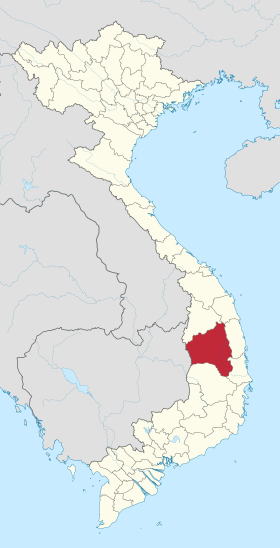

Top bài viết thịnh hành
1.Chùa Minh Thành - Ngôi chùa mang phong cách Nhật Bản giữa phố núi Gia Lai
Xem chi tiết
2.Biển hồ Gia Lai - “Đôi mắt xanh biếc” của thành phố Pleiku
Xem chi tiết
3.Biển Hồ Chè - Bức tranh xanh mát của núi rừng Tây Nguyên
Xem chi tiết
4.Núi lửa Chư Đăng Ya, điểm đến tuyệt vời tại phố núi

Xem chi tiết
Thông tin
Gia Lai nằm ở phía bắc Tây Nguyên - tỉnh có diện tích lớn thứ hai của Việt Nam sau Nghệ An. Phía đông bắc Gia Lai giáp Quảng Ngãi, phía đông giáp Bình Định, phía đông nam giáp Phú Yên, phía tây giáp tỉnh Ratanakiri (Campuchia), phía nam giáp Đăk Lăk và phía bắc giáp Kon Tum. Thành phố tỉnh của Gia Lai là Pleiku .
Các điểm du lịch ở Gia Lai tập trung chủ yếu ở thành phố Pleiku và khu vực lân cận trong bán kính 20-30 km. Gia Lai thuộc vùng khí hậu nhiệt đới gió mùa, độ ẩm cao, lượng mưa lớn, không có bão và sương muối. Thời tiết được chia làm hai mùa rõ rệt là mùa mưa và mùa khô. Mùa mưa thường bắt đầu từ tháng 5 và kết thúc vào tháng 10. Mùa khô từ tháng 11 đến tháng 4 năm sau. Nhiệt độ trung bình năm dao động 20 đến 25 độ C.
Vị trí địa lý
Gia Lai là một tỉnh vùng cao nằm ở phía bắc Tây Nguyên trên độ cao trung bình 700 - 800 mét so với mực nước biển[6]. Gia Lai cách Hà Nội 1120 km, cách Đà Nẵng 396 km, cách Thành phố Hồ Chí Minh 491 km. Tỉnh Gia Lai trải dài từ 12°58'20" đến 14°36'30" vĩ bắc, từ 107°27'23" đến 108°54'40"kinh đông.
- Phía đông giáp tỉnh Bình Định và tỉnh Phú Yên
- Phía nam giáp tỉnh Đắk Lắk
- Phía bắc giáp tỉnh Kon Tum và tỉnh Quảng Ngãi
- Phía tây giáp tỉnh Ratanakiri của Campuchia
Gia Lai là một tỉnh miền núi nằm ở phía bắc Tây Nguyên trên độ cao trung bình 700 - 800 m so với mực nước biển] Lưu trữ 2012-08-31 tại Wayback Machine, Website tỉnh Gia Lai., khoảng 100 km đường biên chủ yếu là huyện Krông Pa, 1 phần huyện Ia Pa và Kông Chro. Phía tây giáp tỉnh Ratanakiri thuộc Campuchia, có đường biên giới chạy dài khoảng 90 km, gồm các huyện Đức Cơ, Chư Prông, và 1 ít của huyện Ia Grai. Phía nam giáp tỉnh Đắk Lắk, và phía bắc của tỉnh giáp tỉnh Kon Tum.
Điều kiện tự nhiên
Gia Lai nằm trên một phần của nền đá cổ rộng lớn, dày trên 4.000 m, thuộc Địa khối Kon Tum. Gần vào phía cuối nam của khối núi Trường Sơn Nam. Gia Lai nằm gần như hoàn toàn phía đông dãy Trường Sơn. Khối địa khối nâng lên không đều từ cuối kỷ Đệ Tam. Nhưng địa hình được núi lửa và phong hóa nhiều năm trở nên bằng phẳng tạo nên các cao nguyên không hoàn toàn bằng phẳng mà nhấp nhô nhiều đồi xen kẽ các vùng tương đối trũng. Địa hình thấp dần từ bắc xuống nam và nghiêng từ đông sang tây, với các đồi núi, cao nguyên và thung lũng xen kẽ nhau khá phức tạp. Càng gần về phía nam chia nhau một nửa vùng đồng bằng với Đăk Lăk, và vùng thấp phía tây của Campuchia. Địa hình Gia Lai có thể chia thành 3 dạng chính là địa hình đồi núi, cao nguyên và thung lũng.
Trong đó, cao nguyên là dạng địa hình phổ biến và quan trọng của Gia Lai, với hai cao nguyên là Cao nguyên Kon Hà Nừng và Cao nguyên Pleiku . Địa hình thứ hai là địa hình đồi núi, chiếm 2/5 diện tích tự nhiên toàn tỉnh, phần lớn nằm ở phía bắc, địa hình núi phân cách mạnh, bề mặt các dạng địa hình khác của Gia Lai như các cao nguyên, những thung lũng đồng bằng cũng đều rải rác có núi, độ cao trung bình của cả 2 cao nguyên là 800m, với đỉnh Kon Ka Kinh - "nóc nhà" của Gia Lai.
Liên kết website
1.Sàn gỗ việt
Xem chi tiết
2.Tìm hiểu thêm về Gia Lai
Xem chi tiết
3.Báo Gia Lai điện tử
Xem chi tiết